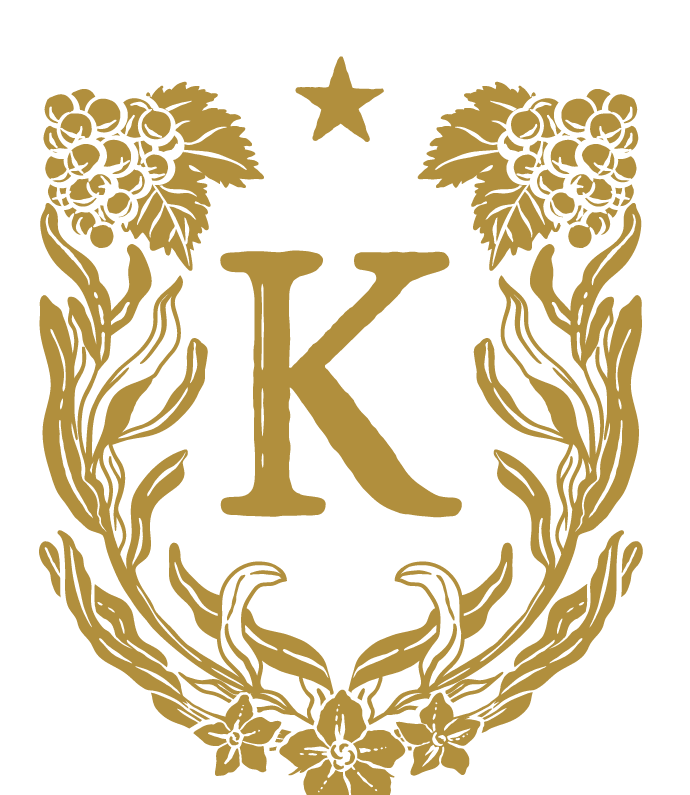
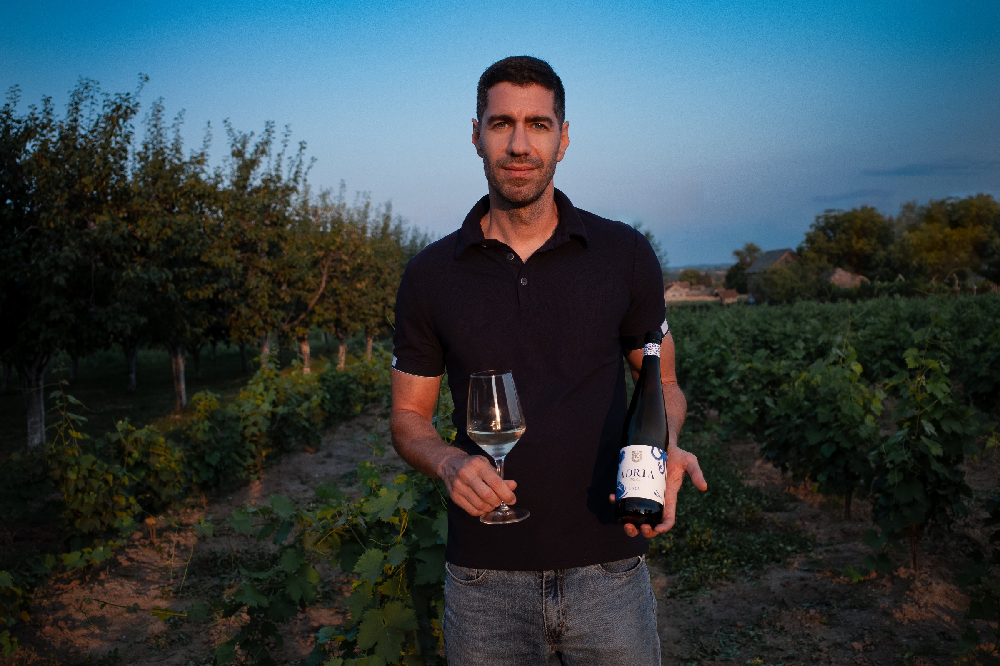
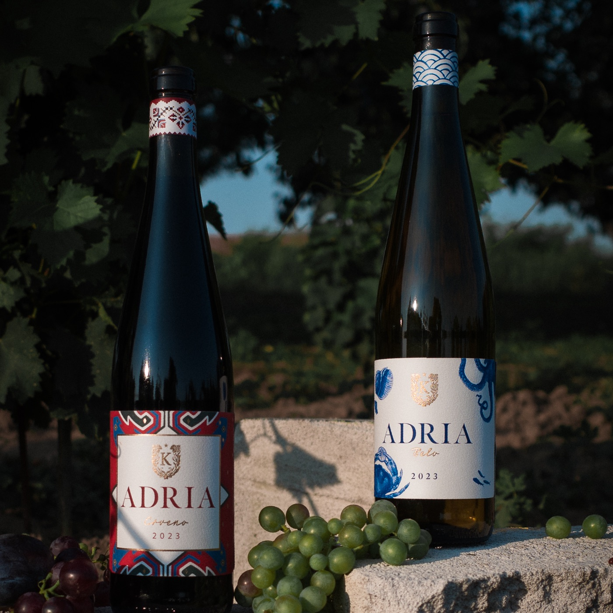
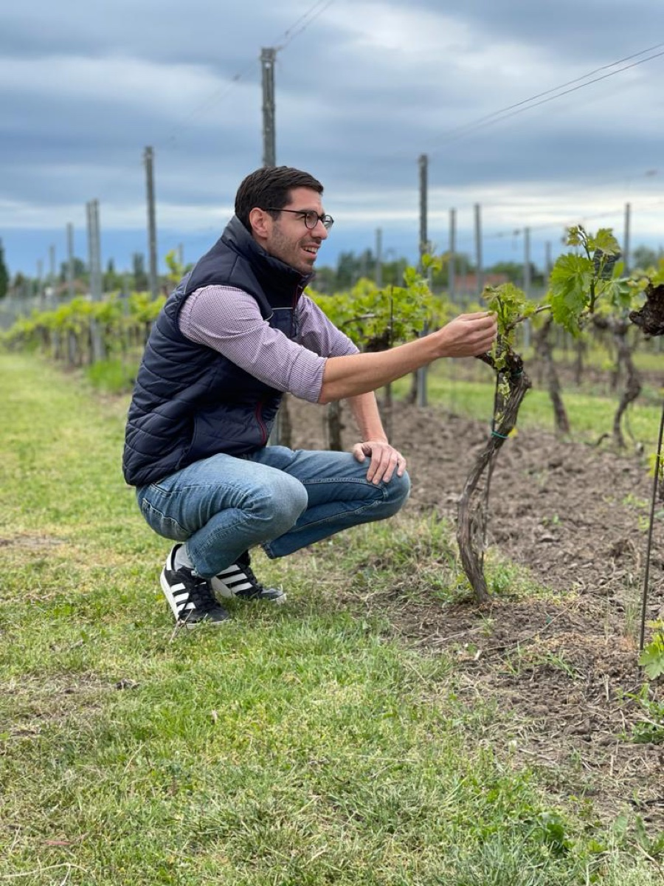

ALKOHOL
13%
VINARIJA
K A R I Ć
K A R I Ć

Hero fotografija(assets/hero.jpg)
„Povratak vina u zaboravljenu Pocerinu"
— VINO.RS

Adria belo i crveno — zajednička fotografija(assets/adria-duo.jpg)
Adria Linija
Dva vina. Dve duše. Jedna baština — boje zastave utkane u svaku kap.
Adria belo
Grašac 50% · Malvazija 35% · Tamjanika 15%
Adria crveno
Frankovka 70% · Prokupac 15% · Marselan 15%
"Balkan - Novi, stari vinski svet."
Vinarija Karić je butik vinarija smeštena u centralnoj Srbiji, na blagim padinama planine Cer. Naša filozofija, kada je reč o vinu, jeste održivost – kako u vinogradu, tako i u podrumu. Trudimo se da budemo što prirodniji i odgovorniji prema našem vinu i zemlji kako bismo našim potrošačima pružili najbolje moguće vinsko iskustvo. Sav rad u podrumu obavlja se ručno, pa se čak i presovanje grožđa vrši tradicionalnom ručnom presom. Upravo zbog toga, naša proizvodnja iznosi svega nekoliko hiljada boca.
Vizija vinarije Karić za čitav Balkan jeste prihvatanje i negovanje autohtonih sorti grožđa. Na Balkansko poluostrvo gledamo kao na „novi, stari vinski svet" sa ogromnim vinskim nasleđem i raskošnom paletom drevnih sorti grožđa, koje su još uvek tajnovite i nedovoljno prepoznate u svetu vrhunskih vina. Naš cilj je da predstavimo sve ono što Balkan ima da ponudi.
Vizija rođena iz ljubavi prema zemlji
Stevan Karić, vlasnik i vinar, poseduje diplomu poljoprivrednih nauka u oblasti vinogradarstva, kao i dugogodišnje iskustvo u vinskom biznisu u Srbiji i regionu.
On je jedini enolog u regionu koji se bavi autohtonim sortama grožđa tako što od njih pravi kupažu (blend). Na tim temeljima kreirao je brend i vino pod nazivom ADRIA.
ADRIA slavi različitost, autentičnost stavlja u prvi plan i ne prihvata osrednjost. Već dokazane autohtone sorte regiona u kupaži donose balans i harmoniju ukusa i mirisa.

Fotografija osnivača u vinogradu(assets/founder.jpg)